CAN FD SIC(Signal Improvement Capability)收发器
面向模拟 IC 设计工程师的 SIC 专项学习笔记:从振铃原理到芯片设计再到验证测试。
所有关键数值均提取自已下载的一手资料(TI SLLA581、NXP TJA1463、Adamson 2020 iCC 论文等),标注于正文。
协议基础
CAN/CAN FD 帧格式 · 仲裁 · 位定时 · TDC · 错误处理 · 术语对照00 协议基础 — CAN / CAN FD 协议层
本篇补齐协议层知识,是后续 SIC 物理层内容的基础。内容依据 ISO 11898-1:2024(数据链路层与物理信令,全文见
标准查阅/ISO 11898-1-2024),关键条目标注标准章节号,可对照原文精读。 术语中文译名参考 GB/T 41588 系列(ISO 11898 系列采标)通用译法。
1. CAN 的分层模型(协议与物理层的分工)
CAN 采用 OSI 分层,ISO 11898 系列按层拆分:
| 层 | 内容 | 标准 | 对芯片的意义 |
|---|---|---|---|
| LLC 逻辑链路控制 | 帧接收过滤、超载通知、恢复管理 | ISO 11898-1 | 协议控制器 |
| MAC 介质访问控制 | 帧封装/解封装、错误检测、仲裁、应答 | ISO 11898-1 | 协议控制器 |
| PCS 物理编码子层 | 位编码/解码、位定时、同步(可选 PWM 编码) | ISO 11898-1 | 协议控制器/PHY 接口 |
| PMA 物理介质接入 | 收发器:驱动、接收、偏置、唤醒(含 SIC) | ISO 11898-2 | 收发器芯片(本专题) |
| PMD 物理介质相关 | 连接器、线缆、振铃抑制电路(可选) | 应用相关 | PCB/线束 |
关键分工:协议控制器(MCU 内)做 DLL+PCS;收发器芯片做 PMA。收发器设计者需要理解协议层的位定时/采样点要求,因为物理层延迟与对称性直接决定协议能否在高速率下工作(见第 6 节)。
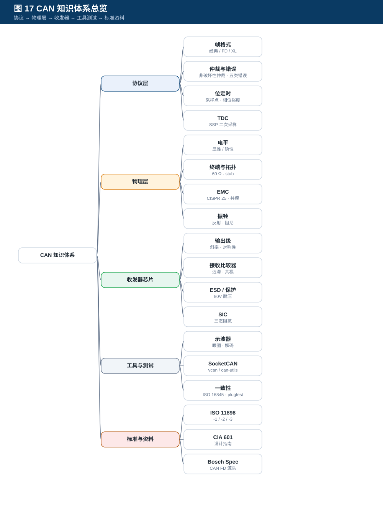
图 17 CAN 知识体系总览>2. 帧格式(ISO 11898-1:2024 §6.6.10/6.6.11)
2.1 帧类型总览
| 帧类型 | 说明 |
|---|---|
| 数据帧 DF | 传输数据(经典 0~8 字节;CAN FD 0~64 字节) |
| 远程帧 RF | 请求数据(经典 CAN 有;CAN FD 无远程帧) |
| 错误帧 EF | 检测到错误时由节点发出 |
| 过载帧 OF | 请求延迟后续帧(过载标志) |
格式组合:CBFF(经典 11 位 ID)、CEFF(经典 29 位 ID)、FBFF(FD 11 位)、FEFF(FD 29 位)。
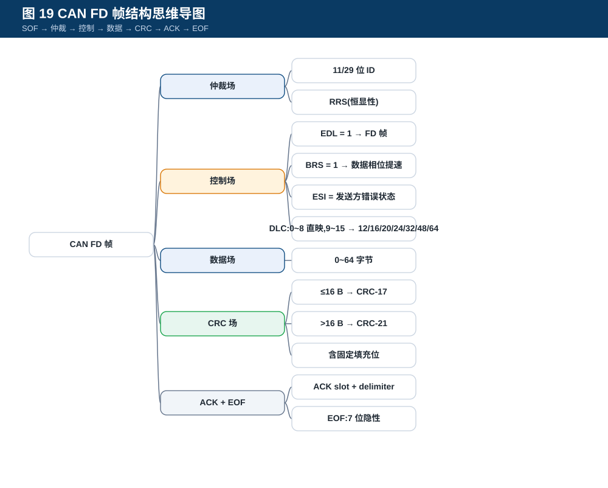
图 19 CAN FD 帧结构思维导图>2.2 经典 CAN 数据帧(CBFF/CEFF,§6.6.10)
SOF | 仲裁场(ID28~ID18 + RTR) | 控制场(IDE/r1 + DLC) | 数据场(0~8 B) | CRC(15位+分隔符) | ACK | EOF(7隐性位)
- SOF:1 个显性位,标志帧起始(总线空闲后);
- 仲裁场:11 位 ID(CBFF)+ RTR;29 位 ID 时插入 SRR(隐性)与 IDE(隐性)再续 18 位 ID + RTR(CEFF)。RTR:数据帧显性、远程帧隐性;
- 控制场:IDE/r1 两位显性(CEFF 为 r0) + 4 位 DLC(0~8);
- 数据场:0~8 字节;
- CRC 场:15 位 CRC + 1 位 CRC 分隔符(隐性);
- ACK 场:ACK slot(发送端发隐性,接收端正确接收后拉显性应答)+ ACK 分隔符(隐性);
- EOF:7 个隐性位;
- 帧间空间:3 位 intermission(隐性);错误被动节点另加 8 位 suspend transmission(§6.6.7)。
2.3 CAN FD 数据帧(FBFF/FEFF,§6.6.11)
SOF | 仲裁场(ID + RRS) | 控制场(FDF res BRS ESI DLC) | 数据场(0~64 B) | CRC-17/21 | ACK | EOF
- RRS(替代 RTR):FD 帧恒为显性(无远程帧);SRR/IDE 规则同 CEFF(FEFF 中 IDE 属于仲裁场);
- FDF(EDL)位:FD 帧为隐性——与经典帧的保留位(显性)冲突解决:同 ID 时经典帧优先于 FD 帧(§6.6.11.2);
- BRS 位:隐性 → 数据相位切换高速率;显性 → 全程仲裁速率;
- ESI 位:发送节点错误状态指示(error-active=显性,error-passive=隐性);
- res 位:保留(显性);
- 数据场:0~64 字节(DLC 编码:0~8 直映;9~15 映射 12/16/20/24/32/48/64);
- CRC:数据场 ≤16 字节用 CRC-17,>16 字节用 CRC-21;CRC 包含填充位计数(3 位)与奇偶位(1 位)——这是 CAN FD 能保持与经典 CAN 相同汉明距离的关键(Hartwich 2012 论文,已下载);
- 其余(ACK/EOF/帧间空间)同经典。
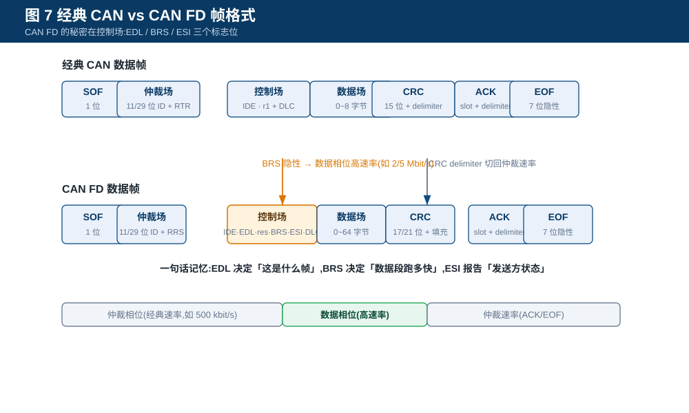
图 7 经典 CAN vs CAN FD 帧格式>2.4 位填充(stuffing,§6.6.6 相关)
| 帧类型 | 填充规则 | 范围 |
|---|---|---|
| 经典 CAN | 5 个连续相同位后插入 1 个反相填充位 | SOF 至 CRC 场之前 |
| CAN FD 仲裁相位 | 同经典(5 位填充) | SOF 至 BRS 采样点 |
| CAN FD 数据相位 | 固定填充:每 4 个位插入 1 个反相填充位 | 数据场与 CRC 场 |
填充规则与 CRC 设计是协议层对收发器"位对称性"提出高要求的原因之一——填充位改变了位模式,收发器必须精确复现每个位的宽度(见 01 章 SIC 的 tBit 对称性)。
3. 仲裁机制(§5.3、§6.6.10.2/6.6.11.2)
- 总线空闲时,任意节点可开始发送;多个节点同时发送时逐位仲裁;
- 总线上显性(0)覆盖隐性(1):发送节点发出隐性位却采样到显性 → 失去仲裁,立即转为该帧的接收者;
- 仲裁从 ID 最高位开始,经典帧到 RTR 结束,FD 帧到 FDF 结束;优先级 = ID 数值小者优先;
- 非破坏性仲裁:胜者继续发送,无需重发,不浪费带宽;
- 混合格式规则:同基 ID 时 CBFF/FBFF 优先于 CEFF/FEFF(SRR/IDE 隐性);数据帧优先于远程帧(RTR);经典帧优先于 FD 帧(FDF);
- 仲裁失败的节点在帧间空间后自动重发(重发尝试,§5.14)。
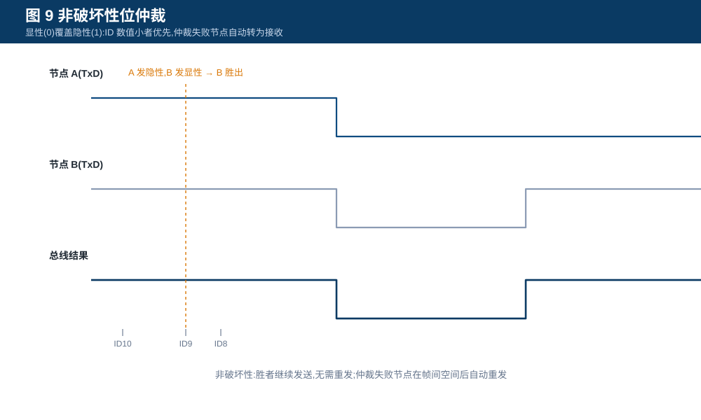
图 9 非破坏性位仲裁>4. 位定时与同步(§7.3)
4.1 位时间结构(§7.3.2)
一位时间由整数个时间量子 tq 组成,tq = 节点时钟周期 × 预分频 m(§7.3.2):
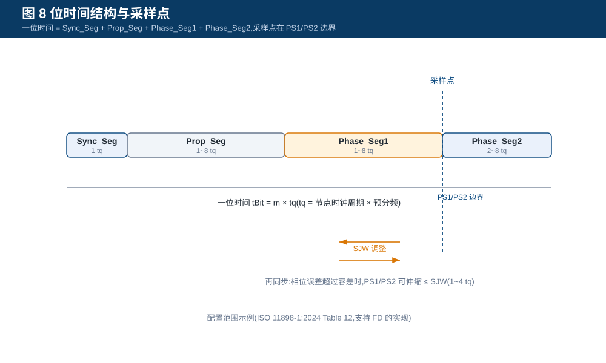
图 8 位时间结构与采样点图 8 位时间结构与采样点>图 8 位时间结构与采样点| 段 | 作用 | 说明 |
|---|---|---|
| Sync_Seg | 边沿同步 | 固定 1 tq;总线边沿应在此段内出现 |
| Prop_Seg | 补偿传播延迟 | 覆盖总线+收发器延迟(2×节点延迟+线长) |
| Phase_Seg1/2 | 采样与再同步余量 | 采样点在 PS1/PS2 边界;SJW 调整范围 |
| SJW | 再同步跳转宽度 | 边沿误差超过容差时,PS1/PS2 可伸缩 ≤SJW |
配置范围示例(ISO 11898-1:2024 Table 12,支持 FD 的实现):标称位时间 Sync_Seg 1 tq、Prop_Seg 1~8 tq、Phase_Seg1 1~8 tq、Phase_Seg2 2~8 tq、SJW 1~4 tq;FD 数据位时间另行配置(Phase_Seg1 1~8 tq 等,见标准原文)。
图 8 位时间结构与采样点>
4.2 仲裁相位 vs FD 数据相位(位速率切换)
- 帧的仲裁相位(SOF 至 BRS 采样点)用标称位时间(如 500 kbps);
- BRS 为隐性时,从 BRS 采样点起切换数据位时间(如 5 Mbps),直到 CRC 分隔符第一个采样点(§7.3.2);
- 采样点位置全网一致是网络设计要点;推荐节点时钟 20/40/80 MHz(CAN FD),CAN XL 推荐 160 MHz(§7.3.2);
- 振荡器容差由 Phase_Seg1/2 与 SJW 决定(§7.3.6)。
4.3 TDC 收发器延迟补偿(§7.3.4)— 与收发器直接相关
- 为什么需要:FD 数据相位位时间很短(5 Mbps → 200 ns),发射器需在采样点前收到自己发出的位以做位错误检测;但收发器 TXD→总线→RXD 的环回延迟(如 190 ns)可能超过采样点前可用的时间 → 误判位错误;
- 适用条件:数据相位位时间 ≤1000 ns 时应使用 TDC;协议控制器内部做延迟补偿;
- 原理:控制器在数据相位发送时,以二次采样点 SSP(Secondary Sample Point)采样自己回读的位,SSP 位置 = 测得环回延迟 + 可编程 TDC 偏移(以 tq 为单位,§7.3.3);
- 与收发器设计的关系:环回延迟越小、对称性越好,SSP 裕量越大 → SIC 收紧环回延迟到 190 ns 与位宽对称性,正是为了让控制器 TDC 有足够的余量(CiA 601-1 有配套计算)。
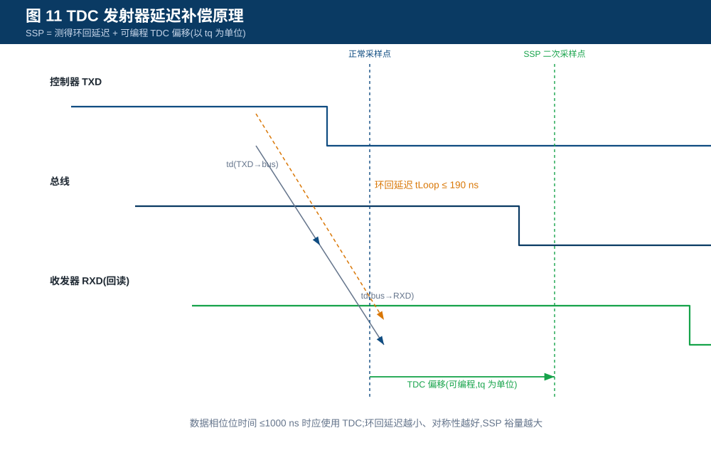
图 11 TDC 发射器延迟补偿原理>4.4 同步(§7.3.5)
- 硬同步:总线空闲后 SOF 边沿,强制 Sync_Seg 对齐;
- 再同步:相位误差导致边沿偏离时,通过 SJW 调整 PS1/PS2 长度;
- 边沿滤波(可选)与振荡器容差共同决定网络最大长度与速率。
5. 错误处理与故障遏制(§5.7~5.12、§6.6.21、§8.1)
5.1 五类错误检测
| 错误 | 检测者 | 说明 |
|---|---|---|
| 位错误 bit error | 发送节点 | 发送位与采样位不一致(仲裁期间除外) |
| 填充错误 stuff error | 所有节点 | 连续 6 个相同位(违反 5 位填充规则) |
| CRC 错误 | 接收节点 | 本地计算 CRC 与接收不符 |
| 形式错误 form error | 所有节点 | 固定格式位(分隔符/EOF)为非法电平 |
| 应答错误 ack error | 发送节点 | ACK slot 采样为隐性(无节点应答) |
5.2 错误帧与恢复
- 检测到错误的节点发送错误帧:6 个显性位(错误被动节点为 6 个隐性位)+ 8 位错误分隔符;
- 错误帧破坏当前帧,所有节点丢弃该帧;发送节点自动重发;
- 总线负载最坏情况:错误重发 × 错误帧(叠加)。
5.3 故障遏制状态机(§8.1,Figure 43)
节点通过发送错误计数 TEC 与接收错误计数 REC 分级:
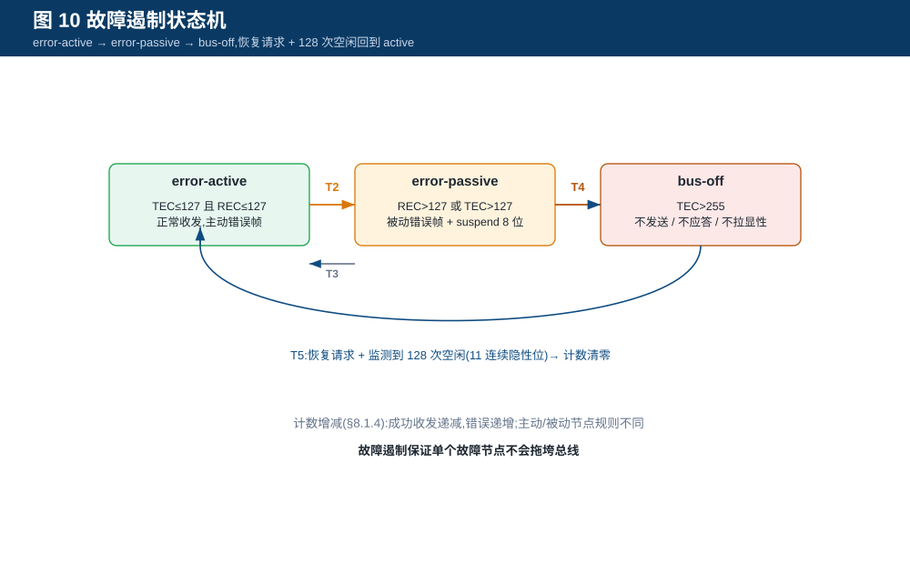
图 10 故障遏制状态机图 10 故障遏制状态机>图 10 故障遏制状态机| 状态 | 条件 | 行为 |
|---|---|---|
| error-active | TEC≤127 且 REC≤127 | 正常发送/接收;发出主动错误帧(6 显性位) |
| error-passive | REC>127 或 TEC>127 | 只能发被动错误帧(6 隐性位);发送前须等待 8 位 suspend transmission |
| bus-off | TEC>255 | 完全退出总线:不发送、不应答、不拉显性(§5.12) |
| 恢复 | 恢复请求 + 监测到 128 次空闲(11 连续隐性位) | 计数清零,回到 error-active |
计数增减规则详见 §8.1.4(成功收发递减、错误递增,主动/被动节点规则不同)。故障遏制保证单个故障节点不会拖垮总线。
图 10 故障遏制状态机>
6. 协议层如何约束收发器(SIC)设计
| 协议要求 | 对收发器的约束 | 对应 SIC 参数 |
|---|---|---|
| 高速数据相位位时间短(200 ns@5M) | 环回延迟小、延迟对称 | tLoop ≤190 ns;td(TXD-bus)≤80、td(bus-RXD)≤110 ns |
| 位采样点必须落在正确位置 | 位宽偏差小(发送+接收) | ΔBit(Bus) −10~+10 ns;ΔREC −20~+15 ns |
| TDC 需要回读自身位 | 回读路径延迟可预测 | 环回延迟对称性 |
| 仲裁相位多位同时驱动 | 有源隐性必须可被显性覆盖 | SIC 有源相位可中断(TXD 转显性立即回显性) |
| 填充位/CRC 位模式多变 | 输出级对称边沿整形 | 斜率控制、对称性设计 |
| bus-off 节点不应答 | 收发器工作模式(静音/只听) | 模式控制(如 TJA1463 Listen-Only) |
结论:SIC 的每一个关键参数都能追溯到协议层的位定时/采样点/延迟预算——先理解本协议章,再看 01 章原理会更通透。
7. 中英术语对照(参考 GB/T 41588 系列采标译名)
| 英文 | 中文 | 说明 |
|---|---|---|
| Controller Area Network (CAN) | 控制器局域网 | 车载/工业总线 |
| Data Link Layer (DLL) | 数据链路层 | LLC+MAC |
| Medium Access Control (MAC) | 介质访问控制 | 帧封装/仲裁/错误 |
| Physical Coding Sublayer (PCS) | 物理编码子层 | 位编码/定时 |
| Physical Medium Attachment (PMA) | 物理介质接入(单元) | 收发器 |
| Physical Medium Dependent (PMD) | 物理介质相关 | 线缆/连接器 |
| transceiver | 收发器(发射接收器) | 本专题主体 |
| dominant / recessive | 显性 / 隐性 | 总线两种逻辑电平 |
| arbitration | 仲裁 | 非破坏性位仲裁 |
| bit stuffing | 位填充 | 填充规则 |
| bit time | 位时间 | 一位的时长 |
| time quantum (tq) | 时间量子 | 位时间最小单位 |
| sample point | 采样点 | 位判定时刻 |
| synchronization segment | 同步段 | Sync_Seg |
| propagation segment | 传播段 | Prop_Seg |
| phase segment | 相位段 | PS1/PS2 |
| synchronization jump width (SJW) | 同步跳转宽度 | 再同步最大调整 |
| bit rate | 位速率/比特率 | bps |
| data phase / arbitration phase | 数据相位 / 仲裁相位 | CAN FD 两段速率 |
| transmitter delay compensation (TDC) | 发射器延迟补偿 | SSP 二次采样 |
| error frame | 错误帧 | 错误指示 |
| fault confinement | 故障遏制 | 计数与状态机 |
| bus-off | 总线关闭 | 节点退出状态 |
| signal improvement capability (SIC) | 信号改善能力 | 本专题核心 |
8. 参考资料
- ISO 11898-1:2024 全文(协议层权威出处):
标准查阅/ISO 11898-1-2024(可复制).pdf/ 中文版(扫描件); - GB/T 41588.1~4-2022(国标采标,
标准查阅/):中文对照; - Hartwich 2012 iCC 论文(CAN FD 协议源头):
2012_Hartwich_CAN_with_Flexible_Data-Rate.pdf; - Bosch CAN FD Specification v1.0(协议前身):
Bosch_CAN_FD_Specification_v1.0_2012.pdf; - CiA 601-3(位定时配置与评估工具,见 01_标准规范)。
原理
为什么需要 SIC · 振铃机理 · 三方面改进 · 关键参数 · 系统级概念 · 标准演进01 原理 — CAN SIC(Signal Improvement Capability)工作原理
本篇从"为什么需要 SIC"出发,讲清振铃的物理机理、SIC 的三方面改进、关键电气参数与系统级概念。 所有数值均提取自已下载的原始资料(TI SLLA581 白皮书、NXP TJA1463 数据手册、Adamson 2020 iCC 论文),详见文末引用清单。
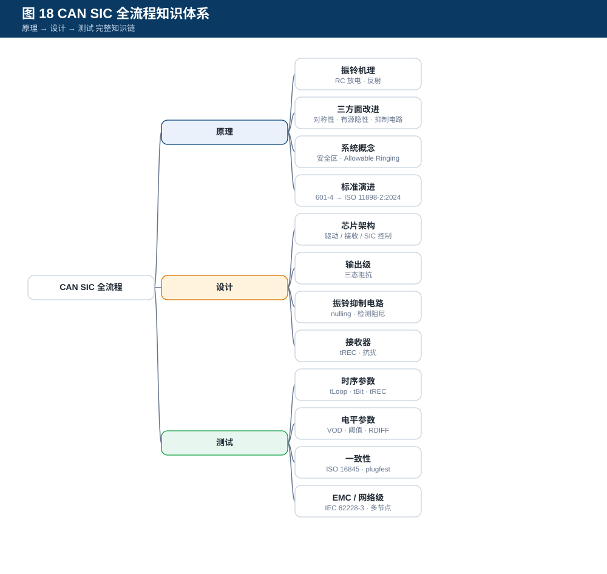
图 18 CAN SIC 全流程知识体系>1. 为什么需要 SIC:CAN FD 的高速瓶颈
1.1 背景:星型拓扑与 stub 反射
CAN 网络最大的优势是易扩展——往总线上挂节点即可。但网络复杂化后(如星型拓扑),未端接的 stub(短桩线)成为反射源:信号到达 stub 末端阻抗突变点会产生反射,反射波在网络中来回振荡,叠加在有用信号上形成振铃(ringing)。
- 常规 CAN FD 收发器虽然额定支持 5 Mbit/s,但在真实车载网络中通常只能用到 <2 Mbit/s(SLLA581 明确说明)。
- 原因是 5 Mbit/s 数据相位位时间仅 200 ns,振铃在采样点前无法衰减干净,导致 RXD 出现毛刺(glitch)。
1.2 振铃造成的直接后果
以 SLLA581 的 Figure 1-1/1-2 为例(波形描述):
- 总线差分电压 VOD(CANH − CANL)在显性→隐性转换后振荡越过 900 mV(显性阈值)和 500 mV(隐性阈值);
- 接收器把振铃误判为显性位 → RXD 上出现伪毛刺(spurious glitches);
- 数据相位速率越高,位时间越短,振铃占位时间的比例越大,误码率越高。
CAN SIC 的目标:在复杂拓扑(星型、多 stub)下把可用数据速率提升到 5 Mbit/s 甚至 8 Mbit/s,且不需要改动网络拓扑或协议层。
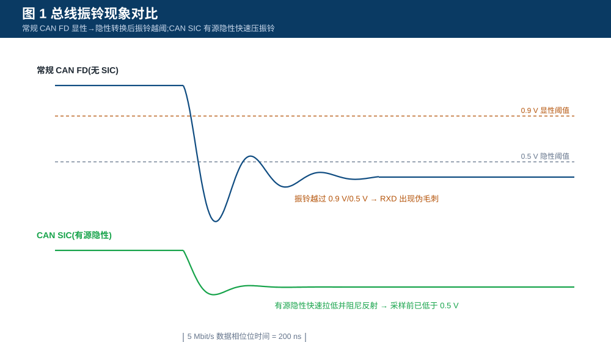
图 1 总线振铃现象对比>2. 振铃的物理机理(设计前必须理解)
2.1 为什么隐性位最脆弱
- 显性位(dominant):驱动器以低阻输出级强制驱动总线,差分电压约 1.5~3 V(显性),信号受控,不易受反射干扰。
- 隐性位(recessive):驱动器输出级变为高阻(约 60 kΩ),总线状态由 60 Ω 端接电阻把分布电容放电决定——总线信号本质上是"靠网络自己放电",没有主动驱动。
- 因此显性→隐性转换是最脆弱的边沿:任何反射都会叠加在这个放电过程上,而放电时间常数(RC)取决于线缆长度、stub、端接。
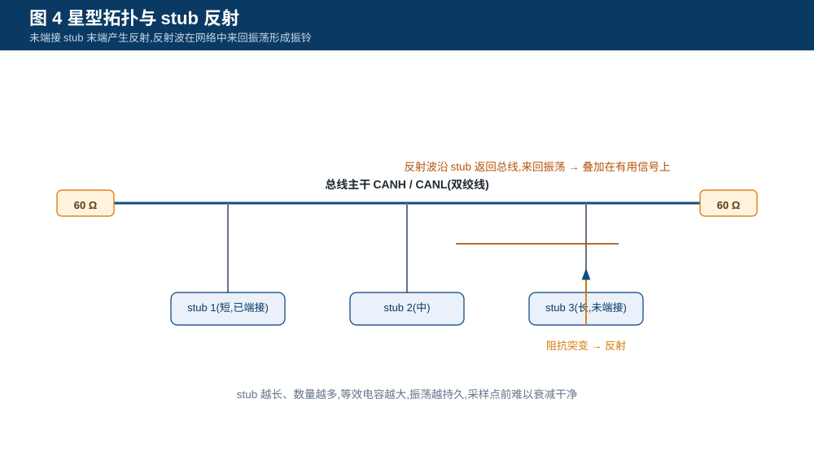
图 4 星型拓扑与 stub 反射>2.2 RC 放电与位时间的矛盾
- 隐性电平恢复速度受限于总线 RC 时间常数;stub 越长、节点越多,等效电容越大,放电越慢。
- 5 Mbit/s 数据相位位时间 200 ns,而振铃衰减往往需要数百 ns → 在采样点(约 50~80% 位时间处)信号仍可能在 0.5 V 阈值附近振荡。
- 结论:传统方案只能靠"限制网络规模/拓扑"来保证高速率,而 SIC 通过主动改善信号来打破这个限制。
2.3 接收器阈值(判断振铃是否致命的标尺)
| 电平 | 含义 |
|---|---|
| 0.9 V | 显性→隐性判定阈值(高于判定显性) |
| 0.5 V | 隐性判定阈值(必须低于此值才算可靠隐性) |
| ~0.7 V | 实际接收器比较器典型翻转点(数据手册的 0.5 V 是标准形式化限值,真实实现通常约 0.7 V,留有安全裕量——Adamson 2020) |
判据:隐性位信号必须在最早可能采样点之前降到 0.5 V 以下;这段可允许的振荡时间被称为 Allowable Ringing Time(Adamson 2020)。
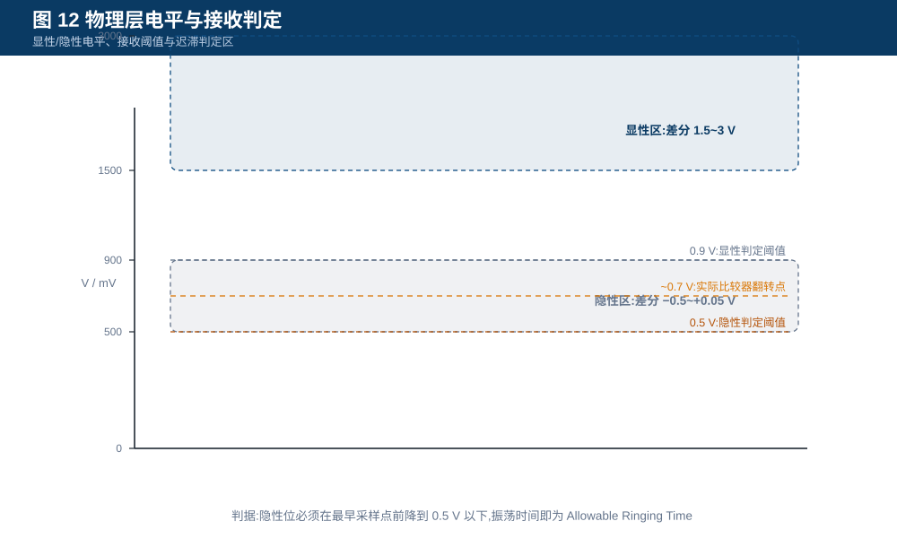
图 12 物理层电平与接收判定>3. SIC 的定义与三方面改进
3.1 定义与标准归属
CAN SIC 是在 CAN FD 收发器上增加的信号改善能力,通过减小信号振铃提升复杂拓扑下的最大数据速率。 最早标准化于 CiA 601-4(signal improvement 规范,2019 v2.0.0);2023 年 601-4 撤回,内容并入 ISO 11898-2:2024 第三版(参数集 Set A/B/C);2024 版 Annex A 进一步引入 FAST 模式与 CAN XL 兼容。
3.2 改进一:更紧的位时序对称性(timing symmetry)
SIC 收发器的位宽偏差(bit-width deviation)比常规 CAN FD 收紧了约 60 ns(Adamson 2020),这是数据速率上限突破的关键:
| 参数 | 符号 | CiA 601-4 / ISO 11898-2:2024 Set C | ISO 11898-2:2016(常规 CAN FD) |
|---|---|---|---|
| 发送隐性位宽偏差 | tBit(Bus) | −10 ~ +10 ns(速率无关) | 2 Mbps:−65 ~ +30 ns;5 Mbps:−45 ~ +10 ns |
| 接收位宽偏差 | tBit(RxD) | −30 ~ +20 ns | 2 Mbps:−100 ~ +50 ns;5 Mbps:−80 ~ +20 ns |
| 接收时序对称性 | tREC | −20 ~ +15 ns | 2 Mbps:−65 ~ +40 ns;5 Mbps:−45 ~ +15 ns |
| 环回延迟 | tLoop | ≤190 ns(SIC) | ≤255 ns(CAN FD) |
来源:SLLA581 Table 1-1 与 "Benefits of CAN SIC" 章节。对称性改善使最坏情况采样点碰撞(见 Adamson Figure 3)的理论速率上限从 ~6 Mbps 提升到远超 8 Mbps(仅考虑对称性、点对点)。
3.3 改进二:有源隐性驱动(active recessive)——SIC 的核心机制
SIC 收发器在显性→隐性转换后,不是立刻进入高阻,而是先进入一段有源隐性(active recessive)相位:
- 显性相位:输出级低阻(约 50 Ω 量级)强制驱动,总线为显性。
- 有源隐性相位(active recessive):转换后,输出阻抗降到约 100 Ω,主动"拉着"总线向隐性放电——反射波遇到低阻看到的是近似匹配阻抗,振铃被大幅衰减;信号被快速拉到 0.5 V 以下。
- 被动隐性相位(passive recessive):有源相位结束后,输出阻抗升回约 60 kΩ,回到标准 CAN 的高阻隐性状态(保证多节点共享总线、显性优先级仲裁不受影响)。
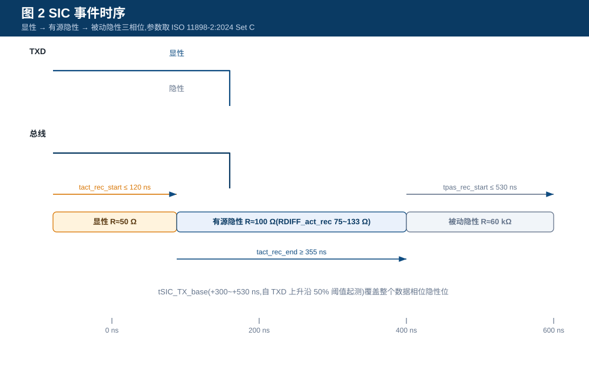
图 2 SIC 事件时序图 2 SIC 事件时序>图 2 SIC 事件时序关键时序窗口(ISO 11898-2:2024 Set C,见 SLLA581 Table 1-2 / TJA1463 数据手册):
| 参数 | 符号 | 规格 |
|---|---|---|
| 有源信号改善相位开始时间 | tact_rec_start | ≤ 120 ns |
| 有源信号改善相位结束时间 | tact_rec_end | ≥ 355 ns |
| 被动隐性相位开始时间 | tpas_rec_start | ≤ 530 ns |
| 有源隐性相位差分内部电阻(CANH−CANL) | RDIFF_act_rec | 75 ~ 133 Ω |
注意:5 Mbit/s 数据相位位时间 200 ns,振铃抑制覆盖整个隐性位;而仲裁相位(1 Mbit/s,位时间 1 µs)多位同时发送时,显性位必须能覆盖隐性位,因此振铃抑制时长会限制仲裁速率与网络长度(见 CiA 601-4 细节,SLLA581 已提示)。
图 2 SIC 事件时序>
标准补充(ISO 11898-2:2024): - 信号改善时间 tSIC 官方定义为 +300 ~ +530 ns(Table A.12,自 TXD 上升沿 50% 阈值起测)——即驱动端保持有源隐性、主动阻尼的最短/最长时长; - 隐性输出电平(Table A.2):CAN_H/CAN_L 单端 2.256~2.756 V(标称 2.5 V),差分 −0.5~+0.05 V(标称 0 V); - 时序测量条件(Table 17 脚注):RL=60 Ω±1%、C1=0、C2=100 pF±1%、CRXD=15 pF±1%,TXD 上升/下降沿 <10 ns(Table A.12 要求 <5 ns 斜率 @50% 阈值用于 SIC 时序测量)。
3.4 改进三:振铃抑制/阻抗匹配电路
各厂商在有源隐性基础上,还会加专门的振铃抑制电路来加速衰减:
- 显性→隐性转换瞬间并联低阻通路加速放电(recessive nulling,TI);
- 瞬态触发式阻尼:检测到振铃峰值即导通泄放管(TI);
- 阻抗匹配单元 + 分段斜率控制(Microchip);
- 前馈式振铃抑制(NXP);
- 振荡抑制单元(Bosch)。
(实现细节与专利对照见 02_设计 专题文档。)
4. 系统级概念(理解 SIC 价值的关键)
4.1 Safe Operating Area(安全操作区)与 Allowable Ringing Time
- Adamson 2017 提出 "Corrected Sample Point",即考虑所有最坏情况不对称后,信号必须保持的安全操作区;
- 在安全操作区内,信号可以自由振荡,只要在最早隐性采样点前回到 0.5 V 以下——这段允许时间就是 Allowable Ringing Time;
- SIC 的价值体现在两个层面:收紧对称性(扩大安全区)+ 快速压振铃(尽快进入安全区)。
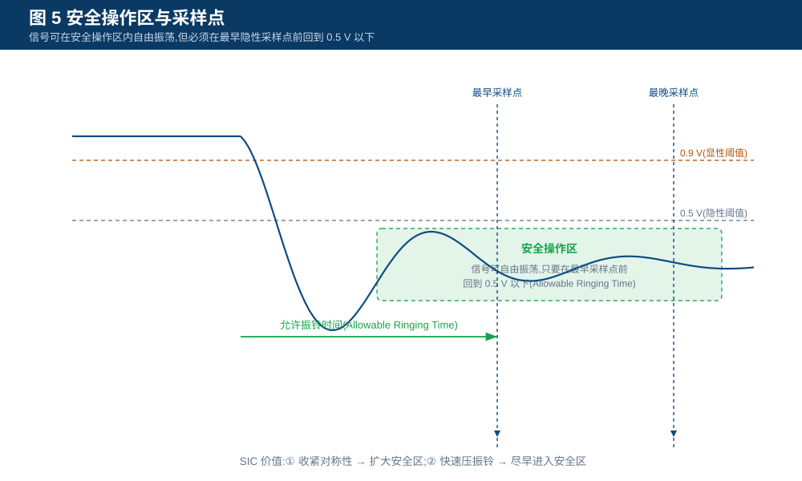
图 5 安全操作区与采样点>4.2 拓扑经验法则(Adamson 2020,经客户实测验证)
HS-CAN 500 kbps 能工作的网络 → CAN SIC 2 Mbps 也能工作; HS-CAN 2 Mbps 能工作的网络 → CAN SIC 5 Mbps 也能工作。
依据:HS-CAN 500 kbps 与 SIC 2 Mbps 的 Allowable Ringing Time 相当;HS-CAN 2 Mbps 与 SIC 5 Mbps 相当。
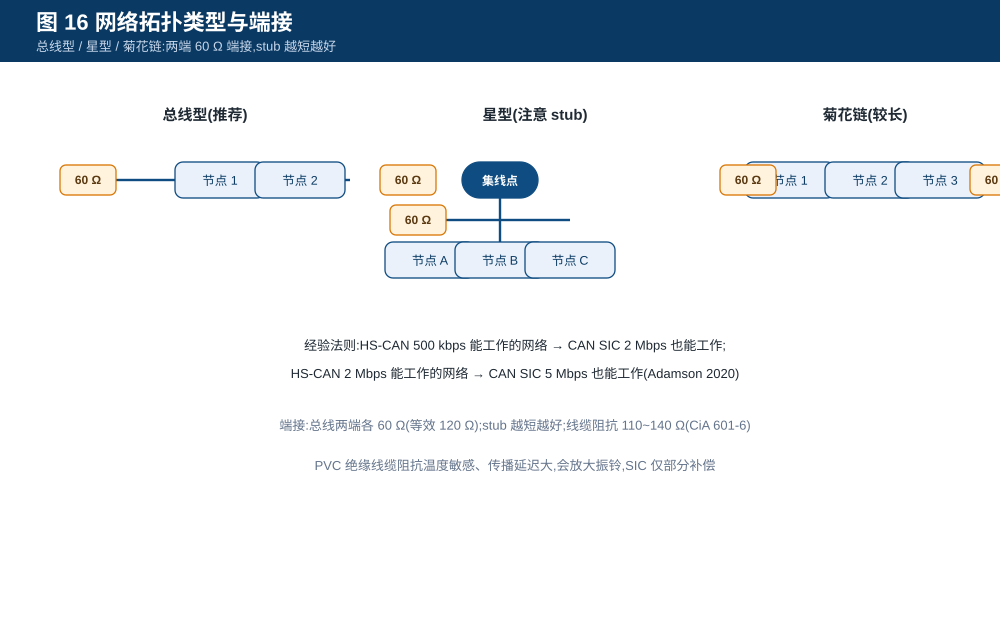
图 16 网络拓扑类型与端接>4.3 采样点选择
- 2 Mbps:采样点宜靠后(70~80%),给振铃最多衰减时间;
- 5 Mbps:采样点宜回中(推荐 50% + 1 tq ≈ 55%),为抖动与 PCB 效应留裕量;
- ⚠️ Secondary Sample Point(SSP)必须与正常采样点设置一致——5 Mbps 时 SSP 设错是 CAN FD 网络支持案例中的常见隐患(Adamson 2020 明确指出)。
4.4 线缆(CiA 601-6)
- 线缆阻抗应在 110~140 Ω 之间;
- PVC 绝缘线缆不满足要求(阻抗温度敏感性 + 传播延迟大),会放大振铃;SIC 的紧对称性与快速隐性边沿对劣质线缆有一定补偿,但仍建议温漂实测。
4.5 低功耗与唤醒(ISO 11898-2:2024 §5.5)
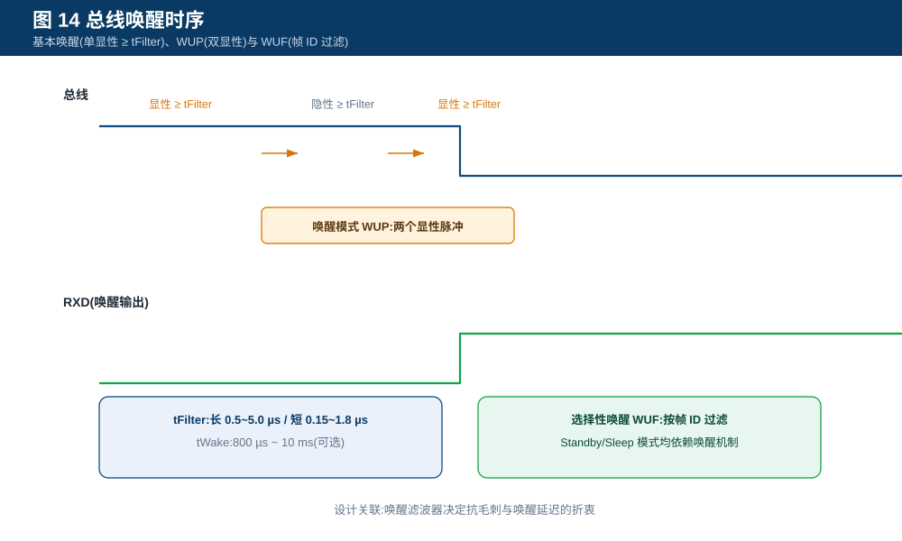
图 14 总线唤醒时序>- 基本唤醒:显性 ≥ tFilter;唤醒模式 WUP:两个显性(各 ≥ tFilter)间隔隐性 ≥ tFilter;选择性唤醒 WUF 按帧 ID 过滤;
- CAN activity filter time tFilter:长 0.5~5.0 µs / 短 0.15~1.8 µs(Table 20);唤醒超时 tWake 800 µs~10 ms(可选);
- 设计关联:唤醒滤波器决定抗毛刺与唤醒延迟折衷;SIC 收发器(TJA1463 等)Standby/Sleep 模式均依赖此机制。
5. 标准演进与兼容性全景
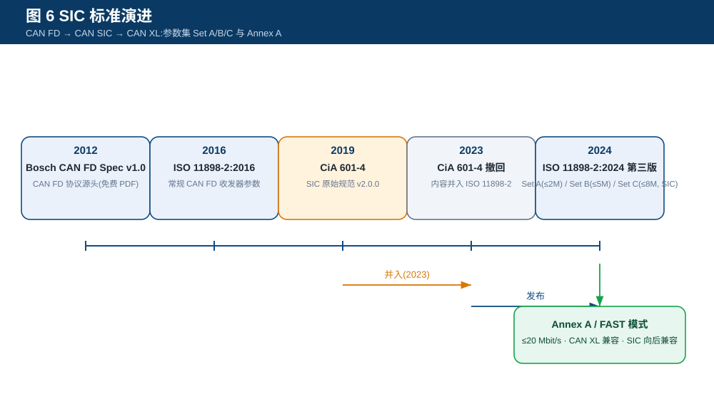
图 6 SIC 标准演进>📖 标准全文已收录(工作区
标准查阅/目录):ISO 11898-2-2024(英文可复制版 + 中文版)、ISO 11898-1-2024、GB/T 41588.1~4-2022(国标采标)。建议直接对照标准原文精读 Table 17/18(参数集 C)与 Annex A(SIC/FAST 模式)。
图 6 SIC 标准演进图 6 SIC 标准演进>图 6 SIC 标准演进
- 互操作:CAN SIC 收发器与 CAN FD、HS-CAN 收发器可同总线混用(SLLA581 确认);
- SIC vs SIC XL:SIC 面向 ≤5/8 Mbit/s;SIC XL(Annex A/FAST)面向 CAN XL 网络 ≤20 Mbit/s,详见专题内
CNL2023-1_Infineon_SIC_vs_SIC_XL.pdf; - 数据速率收益:2→5 Mbps 吞吐提升约 43%(64 字节载荷);5→8 Mbps 仅 19%——这是为什么业界把下一个跳跃投向 CAN XL(Adamson 2020)。
6. 参考资料(已下载,按优先级)
| 资料 | 位置 | 用途 |
|---|---|---|
| TI SLLA581A SIC 白皮书(原理+实测波形) | TI_SLLA581_SIC_whitepaper.pdf |
必读,原理与参数的最全一手来源 |
| Adamson 2020(5-Mbps 网络设计) | 2020_Adamson_CAN_signal_improvement_and_5Mbps_networks.pdf |
必读,系统级概念与拓扑法则 |
| NXP TJA1463 数据手册(SIC 参数表) | NXP_TJA1463_CAN_SIC_datasheet.pdf |
参数对照、ISO 参数↔厂商参数转换表 |
| Infineon:CAN SIC 动态参数(CAN Newsletter 4/2022) | CNL2022-4_Infineon_CAN_SIC_dynamic_parameters.pdf |
SIC 动态参数与 EMC 关系 |
| Infineon:SIC or SIC XL(1/2023) | CNL2023-1_Infineon_SIC_vs_SIC_XL.pdf |
SIC 与 SIC XL 选型 |
| 多厂商 SIC 方案访谈(3/2022) | CNL2022-3_SIC_transceiver_provider_interviews.pdf |
各家设计取舍 |
| Kvaser:Cable layout and CAN transceivers for higher bit rates(2024 iCC) | iCC2024_Kvaser_cable_layout_and_CAN_SIC.pdf |
线束布局与 SIC 收益量化 |
| Kvaser:Improved CAN-driver(2020 iCC) | iCC2020_Kvaser_improved_CAN_driver.pdf |
振铃机理与 slew rate 关系 |
| 标准正文(付费) | ISO 11898-2:2024、CiA 601-4(撤回稿,存档) | 逐条参数与测试条款的权威出处 |
设计
芯片架构 · 输出级三态阻抗 · 对称性 · 振铃抑制电路(专利对照) · 接收器 · 检查清单02 设计 — CAN SIC 收发器芯片设计要点
本篇面向模拟 IC 设计工程师,从收发器芯片架构出发,拆解 SIC 的核心电路模块设计:输出级/驱动器、振铃抑制电路、接收器、SIC 相位控制逻辑,并给出参数规格对照与设计检查清单。 电路实现思路主要取自 12 篇已下载专利(Google Patents 官方 PDF,见
专利分类/)与厂商数据手册。
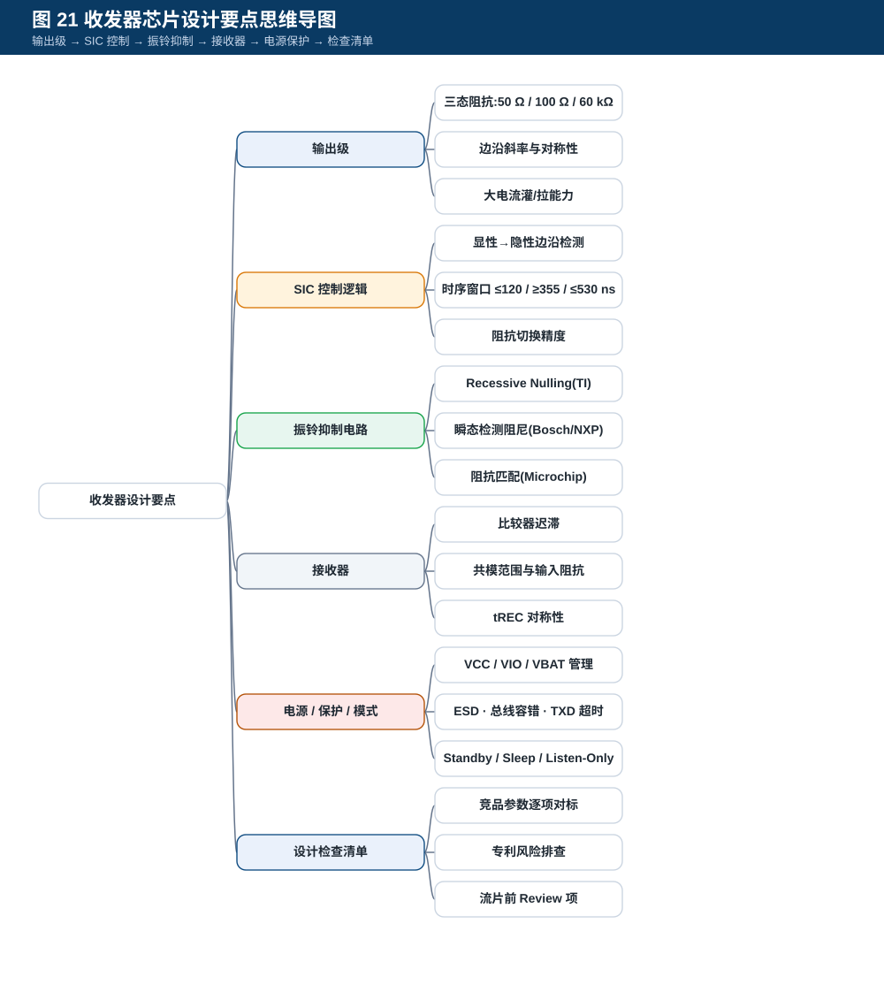
图 21 收发器芯片设计要点思维导图>1. SIC 收发器芯片架构总览
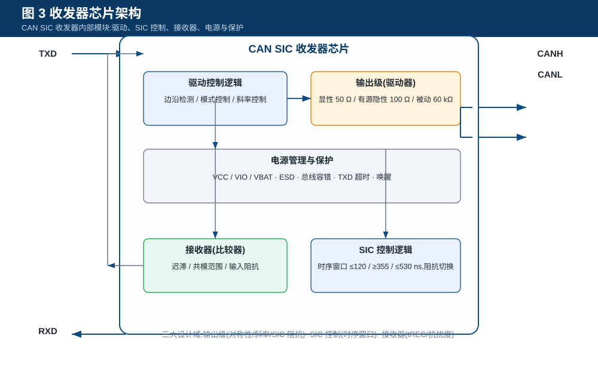
图 3 收发器芯片架构图 3 收发器芯片架构>图 3 收发器芯片架构图 3 收发器芯片架构>
三大关键设计域: 1. 输出级(驱动器):决定位时序对称性、边沿斜率、SIC 阻抗切换——SIC 性能的核心; 2. SIC 控制逻辑:检测显性→隐性转换,按窗口(≤120 ns / ≥355 ns / ≤530 ns)切换有源/被动隐性; 3. 接收器:比较器迟滞、共模范围、输入阻抗,决定接收对称性 tREC 与抗扰度。
2. 输出级(驱动器)设计
2.1 三态阻抗架构(与原理篇的相位对应)
| 相位 | 输出阻抗 | 驱动行为 | 设计要点 |
|---|---|---|---|
| 显性 dominant | 低(约 50 Ω 量级) | 强制驱动差分 | 大电流、低导通电阻、对称灌/拉 |
| 有源隐性 active recessive | 约 100 Ω(RDIFF_act_rec 75~133 Ω) | 主动向隐性放电 | 阻抗精确可控、可定时关断 |
| 被动隐性 passive recessive | 约 60 kΩ | 高阻,总线自然放电 | 高阻漏电要小、与仲裁兼容 |
设计关键:有源隐性阻抗必须落在 75~133 Ω(RDIFF_act_rec,ISO 11898-2:2024 Set C)——太低会过度加载总线(影响仲裁、增加功耗),太高起不到阻尼作用。标准同时规定了单端内部电阻 RSE_SIC_act_rec:37.5~66.5 Ω(Table 18,两个单端电阻串联构成差分 75~133 Ω);Annex B(资料性)给出实现提示:振铃抑制电路的差分内部电阻典型 100 Ω,持续在位宽区间 ΔBit(Bus)(显性→隐性边沿后)。该阻抗通常由并联的辅助驱动支路实现,并可编程/校准以覆盖 PVT 变化。
2.2 位时序对称性设计(timing symmetry)
SIC 的硬指标(ISO 11898-2:2024 Set C,数据相位 ≤8 Mbit/s):
| 参数 | 符号 | 指标 | 设计含义 |
|---|---|---|---|
| 发送隐性位宽偏差 | tBit(Bus) | −10 ~ +10 ns | 输出级上升/下降边沿对称;边沿整形(edge shaping) |
| 接收时序对称性 | tREC | −20 ~ +15 ns | 接收路径滤波/比较器延迟对称 |
| 接收位宽偏差 | tBit(RxD) | −30 ~ +20 ns | TX 对称性 + RX 对称性的叠加 |
| 环回延迟 | tLoop | ≤190 ns | TXD→总线→RXD 总延迟预算 |
标准补充(ISO 11898-2:2024 Table A.2):隐性输出电平——CAN_H/CAN_L 单端 2.256~2.756 V(标称 2.5 V),差分 −0.5~+0.05 V;有源/被动隐性相位均须满足,且两者要求同时成立(不能只满足单端而违反差分约束)。
设计含义: - 驱动器必须做对称边沿整形(dominant→recessive 与 recessive→dominant 的上升/下降时间尽量一致),减小数据相关的时序偏差; - 传播延迟路径要拆分预算:td(TXD-bus) ≤80 ns、td(bus-RXD) ≤110 ns(TJA1463 数据手册实测 70~120 ns 有源隐性起始); - 片上延迟应温度补偿,因为数据手册保证 -40~150 °C 全温范围(TJA1463 脚注:参数按设计保证,工厂测试用关联测试条件覆盖全温)。
2.3 斜率控制(slew rate control)
- 控制输出边沿斜率可降低高频分量 → 减少 EMC 辐射与反射幅度;
- Microchip US11539548B2 给出分段斜率控制:串联延迟线逐级关断多个并联电流源,边沿被切成多段缓变;
- 注意斜率与位时间的权衡:边沿过缓会侵占位时序裕量(5 Mbit/s 位时间 200 ns)。
3. 振铃抑制电路实现(专利对照)
这是 SIC 设计的"秘密武器",各家实现路线不同,均有专利保护。建议按"先懂物理、再对照电路"的方式阅读下列专利(全部已下载到 专利分类/)。
3.1 TI:Recessive Nulling(隐性抵消)— US9606948B2(已过期,LRN/HRN 模式)
- 思想:显性→隐性转换瞬间,额外并联一段低阻通路,加速泄放总线分布电容,让差分波形更快衰减到隐性阈值。
- 实现:主驱动器旁并联 "recessive nulling driver",在转换后选定时长内保持低阻;分两种模式:
- LRN(light recessive nulling):只影响隐性位起始的一段;
- HRN(heavy recessive nulling):整个隐性位都保持低阻(含连续隐性位);
- 混合模式按总线阻抗特征选择 nulling 时长,必须在采样点前终止。
- 设计启发:nulling 时长可由寄存器编程;终止时刻的时序精度(与采样点错开)是设计重点;额外低阻通路会增加转换瞬间电流,需评估 EMC/共模电流。
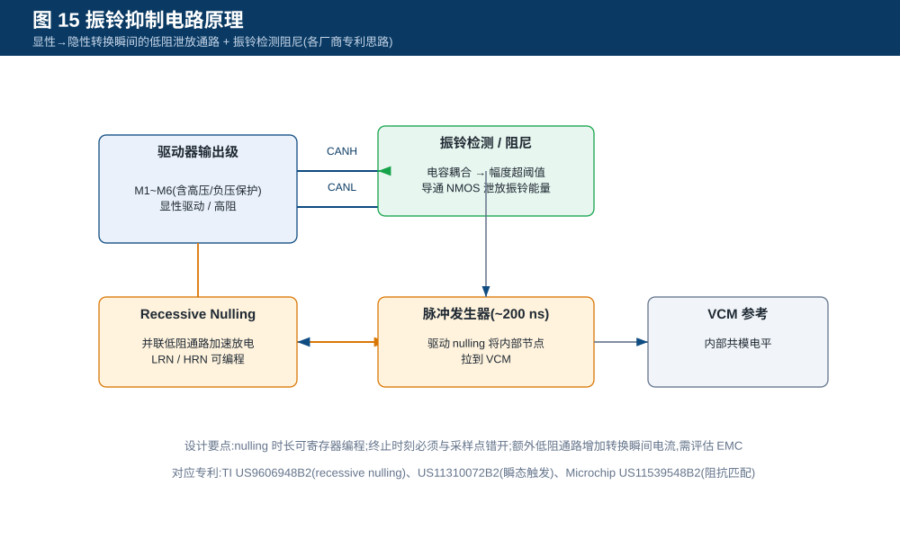
图 15 振铃抑制电路原理>3.2 TI:瞬态触发振铃抑制 — US11310072B2
- 思想:不靠精确定时,而是检测振铃本身:显性→隐性跳变后,振铃信号经电容耦合到 NMOS 栅极,幅度超过阈值即让管子导通,把振铃能量泄放到 VCC/GND。
- 实现:驱动器 M1–M6(含高压/负压保护串联管)+ 脉冲发生器(约 200 ns)驱动 recessive nulling 将内部节点拉到 VCM + 电容耦合的振铃检测/阻尼通路;脉冲宽度固定或可编程。
- 设计启发:"电平检测 + 自动导通阻尼"结构省功耗且对 PVT 鲁棒,不需要精确计时;关键是耦合电容取值(让振铃过阈值但不误触发)与泄放管的尺寸。
3.3 Microchip:阻抗匹配 + 分段斜率 — US11539548B2(权利要求明确标注 CAN SIC)
- 思想:振铃根源是隐性期阻抗失配 → 在转换期间及之后短时把匹配阻抗接入总线(显性态断开);同时用分段斜率控制减小高频成分。
- 实现:阻抗匹配单元用 OTA(跨导放大器) 或"背靠背 regulated 晶体管对 + 栅控制电路"实现可控电阻;斜率控制用串联延迟线逐级关断并联电流源/电阻开关。
- 设计启发:OTA 实现的可控阻抗可在 PVT 下保持振铃抑制性能;阻抗接入/断开的时序与显性态完全隔离,避免影响显性驱动。
3.4 NXP:前馈振铃抑制 — US10020841B2
- 思想:前馈(feedforward) 方式——在转换发生时主动注入抑制信号,而非等振铃出现再检测,响应更快。
- 与 TI 的"反馈检测"路线形成对比:前馈依赖精确的转换时刻检测,反馈更鲁棒但略慢。
3.5 Bosch:振荡抑制单元 — US11068429B2(另有申请公开版 US20200364171A1)
- 针对显性↔隐性位状态切换时的振荡趋势,用振荡抑制单元在切换瞬间改变驱动特性。
- 设计启发:与仲裁(多节点同时驱动)的兼容性设计——振荡抑制不能破坏显性优先仲裁。
3.6 Elmos:加速状态转换驱动器 — US11048657B2
- 显性→隐性加速过渡的输出级设计,与 TI nulling 思路互补。
3.7 学术/行业实现参考
| 方案 | 来源 | 特点 |
|---|---|---|
| 振铃抑制电路(星型拓扑 8 ECU) | DENSO Mori 2014,IEEE EMC Europe(DOI 10.1109/EMCEurope.2014.6930940) | SIC 思想的学术前身,必读背景 |
| 峰值电压检测+阻抗切换动态振铃抑制 | UNIST 硕士论文 2020(开放获取) | 芯片内振铃抑制电路学位论文,少见 |
| 串联阻尼电阻连接器 | KAIST Park 2020,IEEE EDAPS(DOI 10.1109/EDAPS50281.2020.9312922) | 网络级(连接器)阻尼方案,与芯片内方案对照 |
4. 接收器设计
4.1 关键指标与电路
| 指标 | 典型值/要求 | 设计要点 |
|---|---|---|
| 显性/隐性阈值 | 0.9 V / 0.5 V(差分) | 比较器翻转点精度,避免振铃误判 |
| 共模输入范围 | 宽共模(高 EMI,如 TLE9371 强调) | 输入级结构(如 Infineon US10042807B2 四象限输入电路) |
| 接收对称性 tREC | −20 ~ +15 ns | 滤波与比较器延迟对称;迟滞 |
| 输入阻抗 | 隐性期高阻 | 与总线负载/节点数相关 |
标准补充:OOB(Out-Of-Bounds)比较器(ISO 11898-2:2024 A.2.5):SIC 模式接收端除主差分比较器外,还定义 OOB 比较器用于检测总线电平越界(如高幅振铃/干扰),其输出与主比较器经逻辑门(AND)合成 RXD——当差分信号超过 OOB 高/低阈值时强制 RXD 为隐性,防止振铃/干扰被误判为显性位。设计时需保证两个比较器的阈值范围与响应时序满足 Table A.7。
- 迟滞比较器:抑制差分噪声抖动,温度系数要小(吉林大学 AMR 2012 论文有经典实现);
- 共模电容平衡(TI US7113759B2):改善接收器共模抑制,对 EMC 抗扰关键;
- 接收路径的延迟对称性直接决定 tREC——上升/下降路径、滤波器的群延迟必须对称。
4.2 共模与 EMC(收发器级)
- 共模发射抑制:TI US7183793B2(降低 CAN 收发器电磁辐射的系统与方法);
- 输出共模电压 VCM 对称性:TJA1463 有 Vcm(step) symmetry 指标;
- 测试标准:IEC 62228-3(见 03_测试)。
5. SIC 相位控制逻辑(数字/模拟混合)
SIC 时序窗口(ISO 11898-2:2024 Set C / TJA1463 实测):
| 事件 | 符号 | 指标 | 实现 |
|---|---|---|---|
| TXD→总线有源隐性开始 | tact_rec_start | 70~120 ns(≤120) | 边沿检测 + 单稳定时器 |
| TXD→总线有源隐性结束 | tact_rec_end | 355~480 ns(≥355) | 定时窗口;可编程微调 |
| TXD→总线被动隐性开始 | tpas_rec_start | 415~530 ns(≤530) | 输出阻抗切回高阻 |
设计要点: 1. 边沿检测:准确捕捉 TXD 的显性→隐性沿(抗抖、抗毛刺滤波); 2. 可编程窗口:窗口长短需可调以覆盖不同网络(短 stub 可短、长网络需长);寄存器配置; 3. 阻抗切换的连续性:有源→被动切换时不能产生毛刺(glitch-free switch); 4. 与仲裁兼容:多位同时驱动时,有源隐性必须能被显性覆盖(TXD 变 LOW 立即回显性——TJA1463 注释:"If TXD goes LOW before the recessive transition has been completed, the bus switches to dominant"); 5. TXD 显性超时保护:tto(dom)TXD 0.8~9 ms(防止 TXD 卡死拉死总线)。
6. 可靠性/防护设计(车规必做)
| 项目 | 典型指标 | 参考 |
|---|---|---|
| 总线引脚容错 | ±58 V(TI/NXP 新一代);−36~40 V(旧) | 高侧/低侧钳位、串联器件 |
| 总线 ESD | ≥8 kV HBM/IEC | 片内 ESD 结构 + 片外 TVS 协同(IEEE TDMR 2017 论文) |
| TXD 显性超时 | 0.8~9 ms | 数字看门狗 |
| 欠压/过温保护 | UVLO、TSD | 电源管理 |
| 工艺选择 | 0.14 µm HV SOI(NXP Deloge 2015)、0.15 µm BCD(北方工大 2026)、0.18 µm CMOS(TCAS-I 2025) | 高压器件集成度 vs 成本 |
7. 竞品规格对照(设计 Spec 对标用)
| 参数 | NXP TJA1463 | TI TCAN1462/63 | TI TCAN1472(新) | Infineon TLE9371 |
|---|---|---|---|---|
| SIC 标准 | ISO 11898-2:2024 Set C | CiA 601-4 + ISO 2024 | ISO 11898-2:2024 Annex A | CiA 601-4 + ISO 11898-2:2016 |
| 数据速率 | ≤8 Mbit/s | ≤8 Mbps | ≤8 Mbit/s | ≤8 Mbit/s |
| 环回延迟 | ≤190 ns | ≤190 ns | 190 ns max | — |
| 总线容错 | ±58 V | ±58 V | ±58 V | ±58 V |
| 总线 ESD | 8 kV | 8 kV | 8 kV | ±8 kV |
| VIO 范围 | 2.95~5.5 V | 1.7~5.5 V(TCAN1462) | 1.7~5.5 V | 3.3/5 V |
| 特点 | Sleep 模式、ASIL(1464) | INH/WAKE、SOT-23 | 1.8V 逻辑、SOT-23 | 高共模 EMI |
详细数据以各数据手册为准(
厂商资料分类/)。
8. 设计检查清单(流片前对照)
功能/性能
- tBit(Bus) −10~+10 ns、tREC −20~+15 ns、tBit(RxD) −30~+20 ns(Set C)
- RDIFF_act_rec 75~133 Ω;tact_rec_start ≤120 ns;tact_rec_end ≥355 ns;tpas_rec_start ≤530 ns
- 环回延迟 ≤190 ns;TD 拆分:td(TXD-bus) ≤80 ns、td(bus-RXD) ≤110 ns
- 有源隐性可被显性覆盖(仲裁兼容);glitch-free 阻抗切换
- TXD 显性超时 0.8~9 ms
鲁棒性
- 总线引脚 ±58 V 容错、8 kV ESD、欠压/过温保护
- EMC:IEC 62228-3 传导发射/抗扰预算;共模对称
- PVT 角覆盖(−40~150 °C);阻抗可校准/编程
可测性(为 03_测试 预留)
- SIC 窗口(120/355/530 ns)测试引脚或模式暴露
- 环回延迟/对称性测试电路、眼图模板测试点
- 按 ISO 16845-2 测试项预留测点
9. 参考资料
- 专利(全部已下载):
专利分类/(US9606948B2、US11310072B2、US11539548B2、US10020841B2、US11068429B2、US11048657B2、US10042807B2、US7113759B2、US7183793B2、US9471528B2、US10084617B2、US11588662B1) - 数据手册:
厂商资料分类/(TJA1462/63/64、TCAN1462/63/1044、NCV7357) - 芯片级论文:
论文分类/(Deloge 2015 NXP SOI 收发器)、期刊分类/(TCAS-I 2025 安全收发器、MDPI Chips 2024、IEICE ELEX 2025 过冲设计) - 补充文献:IEEE EDAPS 2020(串联阻尼)、UNIST 2020(动态振铃抑制)、DENSO 2014(振铃抑制电路)——DOI 见
03_论文/README.md与调研记录
测试
芯片级参数测量 · 一致性测试 · EMC · 网络级验证 · 测试计划模板03 测试 — CAN SIC 收发器验证与测试方法
本篇覆盖 SIC 收发器从芯片级参数测量到一致性认证、EMC 测试、网络级验证的完整测试体系,并给出测试计划模板。 测试方法与标准依据取自已下载资料(Hancock 2020 iCC 测量论文、Adamson 2020、TJA1463 数据手册)与经验证的 CiA/ADI 行业文章(链接见文末)。
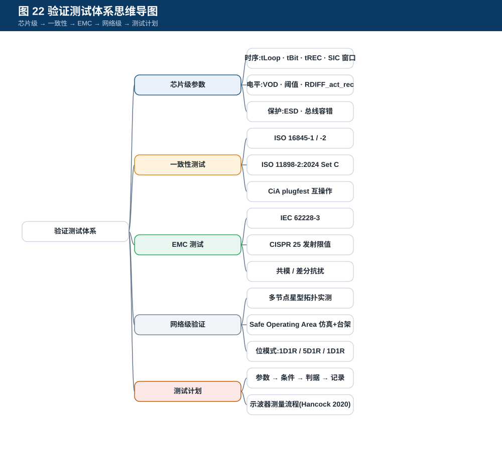
图 22 验证测试体系思维导图>1. 测试体系总览
图 22 验证测试体系思维导图图 22 验证测试体系思维导图>图 22 验证测试体系思维导图
2. 芯片级参数测量
2.1 测量设备与设置
| 设备 | 用途 |
|---|---|
| 高带宽示波器(≥500 MHz)+ 差分探头 | 总线差分波形、时序测量 |
| 信号发生器 + CAN 控制器/分析仪 | 激励 TXD、解码 RXD |
| 网络分析仪(或阻抗测量) | RDIFF_act_rec、输出阻抗 |
| 专用测试板(标准测试电路) | 固定负载(60 Ω 差分)、可测点 |
Hancock 2020(Keysight)"Characterizing the physical layer of CAN FD"给出了环回延迟与隐性位宽的标准示波器测量流程(已下载:
2020_Hancock_Characterizing_the_physical_layer_of_CAN_FD.pdf)。
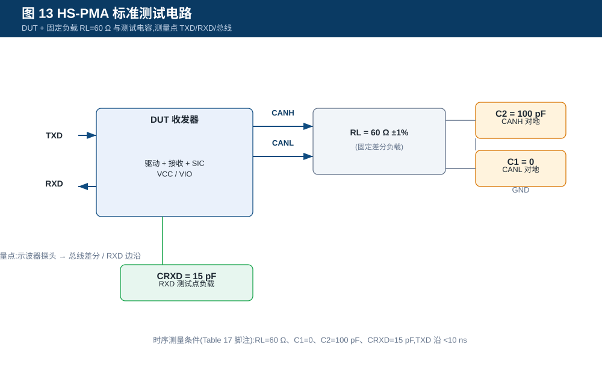
图 13 HS-PMA 标准测试电路>2.2 时序参数测量(核心)
| 参数 | 符号 | 测量方法 | 指标(Set C) |
|---|---|---|---|
| 环回延迟 | tLoop | TXD 边沿 → RXD 边沿(TJA1463: td(TXDL-RXDL)/td(TXDH-RXDH)) | ≤190 ns |
| 发送隐性位宽偏差 | tBit(Bus) | 比较总线隐性位宽度与 TXD 理想位宽 | −10 ~ +10 ns |
| 接收位宽偏差 | tBit(RxD) | 比较 RXD 隐性位宽度与 TXD 理想位宽 | −30 ~ +20 ns |
| 接收时序对称性 | tREC | tREC = tBit(RxD) − tBit(Bus) | −20 ~ +15 ns |
| TXD→总线传播延迟 | tprop(TXD-bus) | TXD 边沿 → 总线越过阈值 | ≤80 ns(dom/rec) |
| 总线→RXD 传播延迟 | tprop(bus-RXD) | 总线越过阈值 → RXD 边沿 | ≤110 ns(dom/rec) |
测量要点: - 位宽偏差测量需要在多个位模式下统计(单一位宽测量会有随机抖动误差),通常用长序列平均; - 测试电路:60 Ω 差分负载 + 规定测试点(TJA1463 Figure 12 的驱动器对称性测试电路);测试条件 VCC 4.75~5.25 V、Tj −40~150 °C; - 环回延迟测试注意触发点(50% 电平)与探头延迟校准。
标准测量条件(ISO 11898-2:2024 Table 17/Table A.12 脚注):RL = 60 Ω ±1%、C1 = 0(不接)、C2 = 100 pF ±1%、CRXD = 15 pF ±1%;TXD 激励信号上升/下降沿 <10 ns;SIC 时序参数(tact_rec_start/end、tpas_rec_start)以 TXD 上升沿 50% 阈值、斜率 <5 ns 为测量参考点。
2.3 SIC 特有参数测量
| 参数 | 符号 | 测量方法 | 指标 |
|---|---|---|---|
| 有源隐性开始时间 | tact_rec_start | TXD 隐性沿 → 总线输出阻抗下降/波形斜率突变 | ≤120 ns |
| 有源隐性结束时间 | tact_rec_end | 总线波形斜率恢复高阻特征 | ≥355 ns |
| 被动隐性开始时间 | tpas_rec_start | 输出阻抗升回高阻 | ≤530 ns |
| 有源隐性差分电阻 | RDIFF_act_rec | 有源隐性窗口内注入测试电流测 V/I | 75~133 Ω |
实现提示:阻抗窗口测量需在总线上叠加小信号扰动,或在专用测试模式下把内部 SIC 控制信号引出;设计阶段应预留测试模式/引脚(见 02_设计"可测性"检查清单)。
2.4 保护与鲁棒性参数
- ESD:总线引脚 HBM/IEC 61000-4-2(≥8 kV);系统级配合 TVS 的 ESD(IEC 61000-4-2 汽车场景,IEEE TDMR 2017 论文);
- 总线容错:CANH/CANL 对 GND/电源短路、±58 V 注入;ISO 7637 瞬态;
- TXD 显性超时:拉死 TXD 验证 0.8~9 ms 超时释放;
- 欠压/过温:UVLO 阈值、TSD 关断与恢复。
3. 一致性测试(标准符合性)
3.1 ISO 16845-1/-2
- ISO 16845-1:2016:CAN 数据链路层与物理信令一致性测试计划(协议控制器层);
- ISO 16845-2:2018:高速介质访问单元(HS-MAU)一致性测试——收发器物理层参数的测试计划本体,SIC 相关测试项以此为基准(针对 ISO 11898-2:2016;ISO/DIS 16845-2 2024 修订正在制定以覆盖新版);
- 获取:ISO 官网付费购买。
3.2 ISO 11898-2:2024 Set C 参数符合性
按 02_设计 的检查清单逐项比对数据手册参数,确认满足:
- 时序:tBit(Bus)/tBit(RxD)/tREC、环回延迟、传播延迟拆分;
- SIC 窗口:tact_rec_start/end、tpas_rec_start、RDIFF_act_rec;
- 电平:差分输出、共模、阈值、隐性偏置。
注意:CiA 601-4(2019 原 SIC 规范)已撤回并入 ISO 11898-2:2024,测试以 ISO 新标准为准;601-4 老测试电路仅作历史参考。
3.3 CiA plugfest(互操作测试)
- 性质:CiA 组织的多厂商收发器/控制器互操作测试,仅限 CiA 会员参加;
- 历史:2015 年纽伦堡 CAN FD plugfest 做了振铃抑制对比测试(三星拓扑、270 m 长线、有无振铃抑制电路对照)——SIC 概念验证的现场记录;
- 近年已为 CAN SIC / SIC XL 收发器组织互操作测试(CiA 测试中心确认);
- 价值:验证自研芯片与 NXP/TI/Infineon 等主流收发器混用时的互操作性——SIC 网络最大的工程风险点。
- 链接:https://www.can-cia.org/services/cia-test-center/cia-plugfest
4. EMC 测试
4.1 IEC 62228-3(CAN 收发器 IC EMC 评估)— 芯片级 EMC 标准
- 规定 CAN 收发器 IC 的传导发射(150 kHz~1 GHz)与射频抗扰度测试板规范、测试条件与限值;
- 与 SIC 直接相关:Infineon 的 CAN SIC 动态参数文章(已下载
CNL2022-4_Infineon_CAN_SIC_dynamic_parameters.pdf)专门讨论 SIC 动态参数与 EMC 测试的关系——SIC 快速边沿在降低振铃的同时会增加高频发射,两者需要权衡; - 获取:IEC Webstore 付费购买。
4.2 CISPR 25(模块/整车级)
- 车辆/模块级传导与辐射发射限值;收发器在 PCB 上的布局(共模扼流圈、去耦)影响显著;
- 参考厂商应用笔记:TI SLVAFC1(ESD 保护)、NXP AH1308(PCB/EMC 设计)——均已下载。
4.3 抗扰度测试方法
- DPI(Direct Power Injection):直接功率注入,评估收发器抗扰阈值(比较器、共模处理的薄弱点);
- BCI(Bulk Current Injection):大电流注入,线束级抗扰;
- 参考:SOKEN/丰田 2024 论文(车载 CAN-FD 收发器 IC 抗扰度评估方法,DOI 10.23919/EMCJapan/APEMCOkinawa58965.2024.10585203)、九州工大 2022(CAN-FD 收发器辐射噪声评估)。
5. 网络级验证(系统)
5.1 眼图模板测试
- CAN FD 数据相位用眼图模板(eye diagram mask)作为合成信号质量测试(仲裁段 + 数据段分开评估);
- 参考:LeCroy Stüber 2024 iCC "What information can eye diagrams provide for CAN?"(已下载
iCC2024_LeCroy_eye_diagrams_CAN.pdf)、Hancock 2020; - 实测时注意:触发源用 SOF,数据相位速率与仲裁速率分别配置。
图 5 安全操作区与采样点>
5.2 Safe Operating Area 仿真 + 台架对照(Adamson 2020 方法论)
- 仿真输入:典型(typical)仿真模型 + 最坏情况不对称评估(不叠加所有参数同时最坏,那不符合实际);
- 位模式:用
1D1R + 5D1R + 1D1R(1 显性+1 隐性,5 显性+1 隐性,1 显性+1 隐性)——覆盖最长振荡漂移与最短显性后接隐性两种最坏场景; - 判据:隐性位信号在最早采样点前回到 0.5 V 以下;安全操作区边界外设警告区(建议 25 ns 时序缓冲 + 0.05 V 电压缓冲)用于早期预警;
- 台架对照:仿真条件与台架测量一致(相同位模式、相同 VCC),便于交叉验证;
- 拓扑覆盖:星型、多 stub、长线;可用 Kvaser 2024 iCC 论文的线束布局分析做补充(已下载)。
5.3 关键配置验证
- 采样点:2 Mbps 用 70~80%;5 Mbps 用 ~55%(50% + 1 tq);
- ⚠️ Secondary Sample Point(SSP)必须与主采样点一致——5 Mbps 下 SSP 设错是实际网络中最常见的隐性故障;
- 端接:60 Ω 差分端接、split termination + 共模电容(改善共模发射);振铃测试网络按 CiA 601-4/ISO 规范搭建。
5.4 系统级测试方法论(ADI)
- ADI 2023 文章"System-level testing of CAN FD transceivers"(免费,can-newsletter.org)讨论多节点系统级测试:环回延迟、RXD 位宽、传播时延对仲裁与采样点的联合影响;
- 链接:https://can-newsletter.org/engineering/engineering-miscellaneous/231215_system-test_transc_analog-devices_cnlm-23-4/
5.5 自动化测试
- 同济大学 2024:多供应商 CAN FD 收发器互操作自动化测试系统(DOI 10.1109/VPPC63154.2024.10755399);
- Aptiv 2021:双线高速 CAN/CAN FD/LIN 物理层一致性测试自动化框架(SAE 2021-26-0484)。
6. 测试计划模板(流片验证用)
1. 目的与依据:ISO 11898-2:2024 Set C / ISO 16845-2 / 数据手册参数
2. 测试环境:测试板(60Ω 差分负载+可测点)、示波器、CAN 分析仪、温箱(-40/25/150°C)、电源(VCC 4.5~5.5V)
3. 测试项矩阵:
[ ] 静态:差分/共模输出、阈值、隐性偏置、输入阻抗(RDIFF_act_rec)
[ ] 时序:tLoop、tBit(Bus)/tBit(RxD)/tREC、tprop 拆分、SIC 窗口(tact_rec_start/end、tpas_rec_start)
[ ] 保护:ESD、±58V 容错、TXD 超时、UVLO/TSD
[ ] EMC:IEC 62228-3 传导发射/抗扰;DPI/BCI
[ ] 网络级:多节点星型拓扑 2/5 Mbps 眼图、0.5V 判据、SSP 配置
[ ] 互操作:CiA plugfest 或与 TJA1463/TCAN1463 混用测试
4. 判定标准:数据手册参数表 + Safe Operating Area(含警告区)
5. 交付物:测试报告、眼图截图、时序统计表、EMC 报告
7. 参考资料(已下载/已验证)
| 资料 | 位置/链接 | 用途 |
|---|---|---|
| Hancock 2020 物理层表征(iCC) | 2020_Hancock_Characterizing_the_physical_layer_of_CAN_FD.pdf |
环回延迟/隐性位宽/眼图测量方法 |
| Adamson 2020(5-Mbps 网络) | 2020_Adamson_CAN_signal_improvement_and_5Mbps_networks.pdf |
Safe Operating Area 仿真方法论、位模式、采样点 |
| TJA1463 数据手册 | NXP_TJA1463_CAN_SIC_datasheet.pdf |
参数定义、测试电路(Figure 12)、测量条件 |
| Infineon CAN SIC 动态参数(4/2022) | CNL2022-4_Infineon_CAN_SIC_dynamic_parameters.pdf |
SIC 动态参数与 EMC 关系 |
| LeCroy 眼图(iCC 2024) | iCC2024_LeCroy_eye_diagrams_CAN.pdf |
眼图分析方法 |
| Kvaser 线束/CAN 驱动(iCC 2020/2024) | iCC2024_Kvaser_cable_layout_and_CAN_SIC.pdf、iCC2020_Kvaser_improved_CAN_driver.pdf |
振铃机理、slew rate 与线束 |
| ADI 系统级测试(2023) | https://can-newsletter.org/engineering/engineering-miscellaneous/231215_system-test_transc_analog-devices_cnlm-23-4/ | 系统级测试方法论 |
| CiA plugfest 页面 | https://www.can-cia.org/services/cia-test-center/cia-plugfest | 互操作测试历史与报名 |
| CAN FD ringing suppression(2015 plugfest 报道) | https://www.can-newsletter.org/engineering/engineering-miscellaneous/150309_plug-fest-canfd-ringging-suppression/ | SIC 前身互操作测试现场记录 |
| 标准(付费) | ISO 16845-2、IEC 62228-3、ISO 11898-2:2024 | 测试条款权威出处 |
参数速查
ISO 11898-2:2024 Table 2-23 数据指标全集 · 测量条件 · 参数集 A/B/C 对比04 参数速查 — ISO 11898-2:2024 数据指标全集
本篇把 ISO 11898-2:2024 正文 Table 2~Table 23 与 Annex A 关键表的数据指标整理为速查表,全部数值提取自标准原文(
标准查阅/ISO 11898-2-2024(可复制).pdf),标注表格号便于对照。 用途:芯片设计指标对标、数据手册编写、测试计划制定时快速查阅。
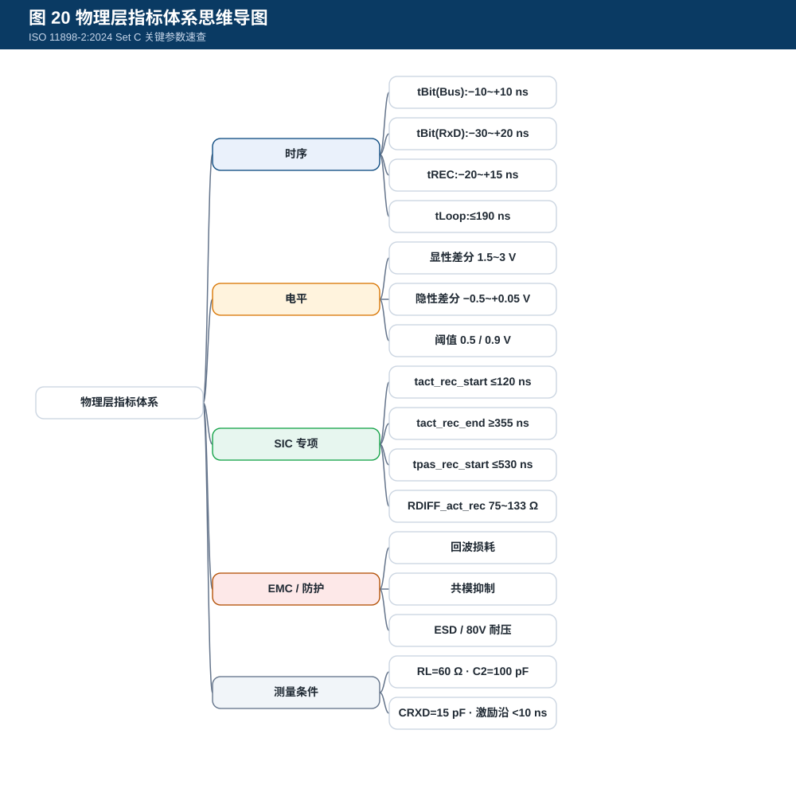
图 20 物理层指标体系思维导图>1. 测量条件速查(Figure 2 测试电路)
| 参数表 | RL | C1 | C2 | CRXD | 激励 |
|---|---|---|---|---|---|
| Table 3/4(隐性输出) | 60 Ω 或 >10 kΩ | 0 | 0 | 0 | — |
| Table 5(显性输出) | 50~65 Ω | 0 | 0 | 0 | — |
| Table 7/8(接收阈值) | >10 kΩ | 0 | 0 | 0 | — |
| Table 12(驱动对称性) | 60 Ω±1% | 4.7 nF±5% | 0 | 0 | TXD 方波 ≤1 MHz(2 Mbit/s) |
| Table 14~17(时序) | 60 Ω±1% | 0 | 100 pF±1% | 15 pF±1% | TXD 沿 <10 ns(10%~90%) |
| Table 18(SIC 时序) | 60 Ω±1% | 0 | 100 pF±1% | 15 pF±1% | TXD 沿 <5 ns @50% 阈值 |
2. 最大额定值(Table 2)
| 参数 | 符号 | Min | Max | 备注 |
|---|---|---|---|---|
| 差分电压额定 | VDiff | −5.0 V | +10.0 V | 无论是否满足扩展额定 |
| CAN_H/L 一般额定 | VCAN_H, VCAN_L | −27.0 V | +40.0 V | 上电/未上电均适用 |
| 可选:扩展额定 | VCAN_H, VCAN_L | −58.0 V | +58.0 V | 24 V 系统复用 |
3. 静态参数
3.1 隐性输出(Table 3:总线偏置 active)
| 参数 | 符号 | Min | Nom | Max |
|---|---|---|---|---|
| CAN_H 单端输出(空载 >10 kΩ) | VCAN_H | +2.0 V | +2.5 V | +3.0 V |
| CAN_H 单端输出(RL=60 Ω) | VCAN_H_rec | +2.137 V | +2.5 V | +2.887 V |
| CAN_L 单端输出(空载) | VCAN_L | +2.0 V | +2.5 V | +3.0 V |
| CAN_L 单端输出(RL=60 Ω) | VCAN_L_rec | +2.137 V | +2.5 V | +2.887 V |
| 差分输出 | VDiff | −0.5 V | 0 V | +0.05 V |
SIC 模式(Annex A Table A.2)隐性电平:2.256~2.756 V(RL=60 Ω),差分 −0.5~+0.05 V。
3.2 隐性输出(Table 4:总线偏置 inactive)
| 参数 | 符号 | Min | Nom | Max |
|---|---|---|---|---|
| CAN_H/CAN_L 单端 | VCAN_H, VCAN_L | −0.1 V | 0 V | +0.1 V |
| 差分输出 | VDiff | −0.2 V | 0 V | +0.2 V |
3.3 显性输出(Table 5,RL=50~65 Ω)
| 参数 | 符号 | Min | Nom | Max |
|---|---|---|---|---|
| CAN_H 单端 | VCAN_H | +2.75 V | +3.5 V | +4.5 V |
| CAN_L 单端 | VCAN_L | +0.5 V | +1.5 V | +2.25 V |
| 差分(正常负载) | VDiff | +1.5 V | +2.0 V | +3.0 V |
| 差分(仲裁,等效 2240 Ω=32 节点) | VDiff | +1.5 V | — | +5.0 V |
| 可选:扩展负载(45~70 Ω) | VDiff | +1.4 V | +2.0 V | +3.3 V |
3.4 最大驱动电流(Table 6)
| 参数 | 符号 | Min | Max |
|---|---|---|---|
| CAN_H 绝对电流 | ICAN_H | — | 115 mA |
| CAN_L 绝对电流 | ICAN_L | — | 115 mA |
| 隐含最小输出电流 | — | >30 mA | — |
3.5 接收阈值(Table 7/8,VCAN ∈ −12~+12 V)
| 判定 | 符号 | Min | Max |
|---|---|---|---|
| 隐性差分输入 | VDiff | −3.0 V | +0.5 V |
| 显性差分输入 | VDiff | +0.9 V | +8.0 V |
| 迟滞区(0.5~0.9 V) | — | 不定义,实际翻转点约 0.7 V |
3.6 接收输入电阻与匹配(Table 9/10,−2 V<VCAN<+7 V)
| 参数 | 符号 | Min | Max |
|---|---|---|---|
| 差分内部电阻 | RDIFF_pas_rec | 12 kΩ | 100 kΩ |
| 单端内部电阻 | RSE_pas_rec | 6 kΩ | 50 kΩ |
| 电阻匹配 mR=2×(RSE_H−RSE_L)/(RSE_H+RSE_L) | mR | −0.03 | +0.03 |
3.7 未上电漏电流(Table 11)
| 参数 | 符号 | 限值 |
|---|---|---|
| CAN_H/CAN_L 漏电流(未上电,VCAN=5 V) | ICAN_H, ICAN_L | ±10 µA |
4. 动态参数
4.1 驱动对称性(Table 12)
| 参数 | 符号 | Min | Nom | Max |
|---|---|---|---|---|
| 基于 VCC 的对称性 Vsym=(VCAN_H+VCAN_L)/VCC | Vsym_vcc | +0.9 | +1.0 | +1.1 |
| 基于隐性电压和的对称性 | Vsym_vrec | +0.9 | +1.0 | +1.1 |
目的:控制 RF 发射;在显性/隐性状态及转换期间均须满足;TXD 以最高位速率(≤1 MHz/2 Mbit/s)方波激励。
4.2 TXD 显性超时(Table 13,可选)
| 参数 | 符号 | Min | Max |
|---|---|---|---|
| 发送显性超时 | tdom | 0.8 ms | 10.0 ms |
旧实现允许 0.3 ms;min 值保证 ≥21.6 kbit/s 时 17 个连续显性位、≥45.8 kbit/s 时 36 个连续显性位不误触发。
4.3 环回延迟(Table 14)
| 参数集 | 符号 | Max |
|---|---|---|
| A / B(≤5 Mbit/s) | tLoop | 255 ns |
| C(SIC) | tLoop | 190 ns |
| C:传播延迟 TXD→BUS | tprop(TXD_BUS) | 80 ns |
| C:传播延迟 BUS→RXD | tprop(BUS_RXD) | 110 ns |
4.4 数据信号时序:参数集 A / B / C(Table 15/16/17)
| 参数 | 符号 | 集 A(>1~2 Mbit/s) | 集 B(>2~5 Mbit/s) | 集 C(SIC,≤8 Mbit/s) |
|---|---|---|---|---|
| 发送隐性位宽偏差 | ΔBit(Bus) | −65 ~ +30 ns | −45 ~ +10 ns | −10 ~ +10 ns |
| 接收隐性位宽偏差 | ΔBit(RXD) | −100 ~ +50 ns | −80 ~ +20 ns | −30 ~ +20 ns |
| 接收时序对称性 | ΔRec | −65 ~ +40 ns | −45 ~ +15 ns | −20 ~ +15 ns |
注:1 Mbit/s 及以下不定义位宽偏差限值(Table 15/16/17 注)。
4.5 SIC 时序与阻抗(Table 18,参数集 C)
| 参数 | 符号 | Min | Max | 条件 |
|---|---|---|---|---|
| 有源隐性差分内部电阻 | RDIFF_act_rec | 75 Ω | 133 Ω | +2 V<VCAN< VCC−2 V |
| 可选:单端内部电阻 | RSE_SIC_act_rec | 37.5 Ω | 66.5 Ω | −12 V<VCAN<+12 V |
| 有源信号改善开始时间 | tact_rec_start | — | 120 ns | 自 TXD 上升沿(50%,<5 ns) |
| 有源信号改善结束时间 | tact_rec_end | 355 ns | — | 同上 |
| 被动隐性开始时间 | tpas_rec_start | — | 530 ns | 同上 |
4.6 SIC 模式附加时序(Annex A Table A.11/A.12)
| 参数 | 符号 | Min | Max |
|---|---|---|---|
| 环回延迟(SIC 模式) | tLoop | — | 190 ns |
| 信号改善时间 | tSIC | +300 ns | +530 ns |
| 发送隐性位宽偏差 | ΔBit(Bus) | −10 ns | +10 ns |
| 接收隐性位宽偏差 | ΔBit(RXD) | −30 ns | +20 ns |
| 接收时序对称性 | ΔRec | −20 ns | +15 ns |
5. 唤醒、空闲与偏置
5.1 唤醒实现(Table 19)
| 收发器类型 | 必需唤醒机制 |
|---|---|
| 无低功耗模式 | 无 |
| 有低功耗但无选择性唤醒 | 基本唤醒或 WUP |
| 有选择性唤醒 | WUP + WUF(唤醒帧) |
5.2 唤醒定时(Table 20)
| 参数 | 符号 | Min | Max |
|---|---|---|---|
| CAN 活动滤波时间(长) | tFilter | 0.5 µs | 5.0 µs |
| CAN 活动滤波时间(短) | tFilter | 0.15 µs | 1.8 µs |
| 唤醒超时(可选) | tWake | 800 µs | 10 000 µs |
5.3 SOF 前空闲位数(Table 21)
| 参数 | 符号 | Min | Max |
|---|---|---|---|
| 接受新 SOF 前的隐性位数 | nBits_idle | 6 | 10 |
5.4 FD 数据相位位滤波(Table 22,占仲裁位时间百分比)
| 选项 | 符号 | Min | Max |
|---|---|---|---|
| 位滤波 option 1(数据速率 ≤4×仲裁速率 或 2 Mbit/s) | pBitfilter | 5% | 17.5% |
| 位滤波 option 2(数据速率 ≤10×仲裁速率 或 5 Mbit/s) | pBitfilter | 2.5% | 8.75% |
5.5 总线偏置控制(Table 23)
| 参数 | 符号 | Min | Max |
|---|---|---|---|
| 总线静默超时(自动关闭偏置) | tSilence | 0.6 s | 1.2 s |
| 总线偏置反应时间 | tBias | — | 250 µs |
6. 参数集 A/B/C 设计含义速记
| 参数集 | 速率 | 适用 | 关键差异 |
|---|---|---|---|
| A | >1~2 Mbit/s | 经典 CAN FD 收发器 | 环回 ≤255 ns;对称性较宽松 |
| B | >2~5 Mbit/s | 高性能 CAN FD | 对称性收紧(ΔRec −45~+15 ns) |
| C | ≤8 Mbit/s | SIC 收发器(本专题) | 环回 ≤190 ns;ΔBit(Bus) ±10 ns;有源隐性 75~133 Ω/120/355/530 ns 窗口 |
7. 关键指标设计含义(为什么必须满足)
每个指标不是孤立的数字——它由协议时序、物理传输、EMC、可靠性四类约束推导而来。本节给出 15 个关键指标的物理原因与不满足的后果,是设计规格评审的依据。
7.1 最大额定值 VCAN_H/L −27~+40 V(可选 ±58 V)
- 要求:一般 −27~+40 V;扩展 −58~+58 V(Table 2);
- 为什么:车载线束是强干扰环境——感性负载关断(ISO 7637 抛负载)、相邻线缆耦合、地偏移都会在 CANH/CANL 叠加高压瞬态;±58 V 扩展面向 24 V 卡车/48 V 系统,允许更大电源轨与更恶劣瞬态;
- 不满足的后果:引脚 ESD 结构/闩锁/栅氧击穿,芯片永久损坏——这是可靠性第一道防线。
7.2 隐性输出电平 2.5 V(2.137~2.887 V @60 Ω)
- 要求:单端 2.5 V 标称(Table 3/Table A.2);
- 为什么:显性/隐性单端电平决定总线共模电压。全网节点隐性共模一致(≈2.5 V)才能让接收器在宽共模范围内稳定工作;2.5 V 近似电源(VCC=5 V)中点,共模对称性最好,EMC 最优;
- 不满足的后果:共模偏差 → 接收器共模抑制不足、辐射发射恶化、多节点下隐性被误判。
7.3 显性差分输出 1.5~3.0 V
- 要求:VDiff 1.5~3.0 V(标称 2.0 V,Table 5);
- 为什么:信号沿总线传播存在线缆衰减与连接器损耗,接收端 VDiff 必须仍 >0.9 V 显性阈值——1.5 V 下限保证最远节点、最差线缆下仍可靠判显性;3 V 上限限制辐射与功耗;
- 不满足的后果:下限不足 → 远端节点收不到显性(仲裁错误、丢帧);上限过高 → EMI 超标。
7.4 接收判定 0.9 V / 0.5 V 与迟滞区
- 要求:显性 >0.9 V、隐性 <0.5 V(Table 7);
- 为什么:0.5~0.9 V 之间的迟滞区提供噪声容限,防止总线噪声/振铃在阈值附近抖动造成 RXD 毛刺;0.5 V 是"隐性判据"——SIC 把振铃压到 0.5 V 以下正是为此(见 01 章);
- 不满足的后果:阈值漂移 → 误判;振铃峰值只要高于 0.5 V 就可能被误读为显性位 → 高速率下必然误码。
7.5 接收输入电阻 12~100 kΩ
- 要求:差分 12~100 kΩ、单端 6~50 kΩ(Table 9);
- 为什么:每个节点的隐性输入电阻并联在总线上,等效负载 = 60 Ω ∥ (Rin/n);Rin 太小 → 节点数多时总线负载过重、隐性电平被拉低;
- 不满足的后果:节点容量受限、隐性电平异常、仲裁不可靠。
7.6 未上电漏电流 ±10 µA
- 要求:±10 µA(Table 11);
- 为什么:掉电节点必须"透明"——不能影响其他节点通信(总线保持隐性 2.5 V);
- 不满足的后果:漏电大 → 总线电平被拉偏,整个网络通信失效(单点拖垮全网)。
7.7 驱动对称性 Vsym 0.9~1.1
- 要求:0.9~1.1(Table 12);
- 为什么:显性↔隐性切换时共模电压变化幅度小且对称,差分信号中的共模分量(EMI 主要来源)才小——这是无共模扼流圈也能满足 EMC 的关键机制;
- 不满足的后果:不对称 → 共模发射超标,整车 EMC(如 CISPR 25)无法通过。
7.8 TXD 显性超时 0.8~10 ms
- 要求:0.8~10 ms(Table 13);
- 为什么:防止协议控制器故障导致 TXD 持续显性——总线被"拉死",所有节点无法通信;
- 不满足的后果:单个节点故障即可使全网瘫痪(无超时保护时)。
7.9 环回延迟 ≤190 ns(SIC)
- 要求:≤190 ns(Table 14,参数集 C);A/B 集 ≤255 ns;
- 为什么:5 Mbps 数据相位位时间仅 200 ns,发射器需在采样点/SSP 前收到自己回读的位;190 ns 环回 + 控制器 TDC 才能在 200 ns 内完成判定;环回越小,可支持的速率与网络长度越大;
- 不满足的后果:高速数据相位位错误 → 数据相位速率被限制在 2 Mbps 以下(这正是普通 CAN FD 的瓶颈,见 00 章 TDC)。
7.10 位宽对称性 ΔBit(Bus) ±10 ns / ΔRec −20~+15 ns
- 要求:Table 17(参数集 C);
- 为什么:位宽偏差直接挤占采样窗口;全网节点偏差叠加后,采样点必须仍落在位中间;±10 ns 让 5 Mbps(200 ns 位)仍保有足够裕量——对比参数集 A 的 ±65 ns 只能支持 ≤2 Mbps;
- 不满足的后果:采样点偏移 → 误码;这是 SIC 相比常规 CAN FD 最核心的时序收益(Adamson 2020:收紧 60 ns)。
7.11 有源隐性阻抗 RDIFF_act_rec 75~133 Ω
- 要求:75~133 Ω(Table 18);
- 为什么:有源隐性期间驱动阻抗接近总线差分特性阻抗(~120 Ω),反射波到达时被吸收而非反射;75 Ω 下限避免过度加载(与 60 Ω 端接并联),133 Ω 上限保证足够阻尼;
- 不满足的后果:太低 → 隐性电平被拉低 + 功耗增大;太高 → 振铃压不住,采样点前回不到 0.5 V。
7.12 SIC 窗口 120 / 355 / 530 ns
- 要求:tact_rec_start ≤120 ns、tact_rec_end ≥355 ns、tpas_rec_start ≤530 ns(Table 18);
- 为什么:有源隐性必须在转换后立即启动(≤120 ns,振铃刚起就阻尼),持续覆盖整个隐性位(≥355 ns,5 Mbps 位时间 200 ns),并在仲裁相位(1 µs 位)内回到高阻(≤530 ns),保证多节点仲裁时显性仍可覆盖;
- 不满足的后果:启动晚 → 振铃已形成;结束早 → 振铃未衰减完;结束晚 → 隐性被"强拉",仲裁失效或功耗大。
7.13 唤醒滤波 tFilter(0.15~5 µs)
- 要求:长 0.5~5 µs / 短 0.15~1.8 µs(Table 20);
- 为什么:总线噪声/毛刺不能误唤醒节点(静态功耗);但滤波过长唤醒延迟大——折衷值由系统实时性要求决定;
- 不满足的后果:太短 → 误唤醒耗电;太长 → 唤醒慢,实时性差。
7.14 总线静默超时 tSilence(0.6~1.2 s)
- 要求:0.6~1.2 s(Table 23);
- 为什么:总线长时间无活动(如休眠网络)时自动关闭隐性偏置,降低静态电流;0.6 s 下限避免正常通信间隙被误判为静默;
- 不满足的后果:太短 → 正常通信时误关偏置;太长 → 静态功耗高。
7.15 SOF 前空闲位数 6~10
- 要求:6~10 个隐性位(Table 21);
- 为什么:SOF 判定需要连续隐性位确认总线空闲,防止噪声/残留振铃被误认为 SOF;6 下限与 3 位 intermission 兼容;
- 不满足的后果:下限太少 → 噪声误判 SOF;上限太多 → 总线利用率下降。